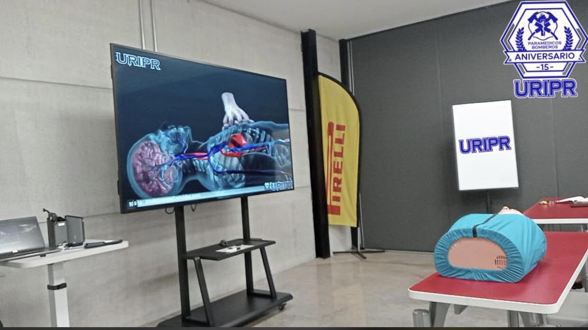

Cuando cada segundo importa, estamos contigo.
Somos URIPR, Unidad de Respuesta Inmediata Planeta Rojo, con 17 años de experiencia desde 2009. Paramédicos y bomberos certificados, atención prehospitalaria y traslados de urgencia las 24 horas, los 365 días del año.
La diferencia entre un buen y un mal desenlace… casi siempre es el tiempo de respuesta.
En URIPR Emergencias combinamos personal certificado, tecnología de punta y protocolos probados para llegar a tiempo, cuando más se necesita.
Atención Prehospitalaria
Estabilizamos y atendemos al paciente desde el primer minuto, en el lugar de los hechos.
Traslados Programados y de Urgencia
Desde citas médicas hasta emergencias críticas, coordinamos cada traslado con precisión.
Paramédicos Altamente Capacitados
Personal con formación continua en protocolos internacionales de atención de urgencias.
Torre de Control Operativo
Monitoreamos cada unidad las 24 horas, los 365 días, vía radio y GPS, para brindarte protección y confianza.
Equipamiento de Alta Tecnología
Unidades equipadas con instrumental de vanguardia para soporte básico y avanzado.
Seguridad, Confianza y Profesionalismo
Protocolos estandarizados que garantizan la seguridad del paciente en cada servicio.
Un equipo multidisciplinario formado en 2009, con vocación de servicio.
Brindamos servicios de ambulancias, capacitación, asesoría técnica y normativa en materia de emergencias, seguridad e higiene y protección civil, colaborando con empresas y particulares para elevar los estándares de atención médica prehospitalaria.
Misión
Ofrecer un servicio de calidad y calidez, con los mejores estándares en atención médica adecuada para el paciente y la comunidad en general.
Visión
Ser una consultoría y prestador de servicios de emergencia que colabore con las empresas para mejorar los estándares de calidad y calidez en los servicios que ofrece.
Nuestros valores
Acreditados y certificados ante
17 años protegiendo vidas
en el Estado de México
Una flota lista, personal certificado y un compromiso que no descansa, ni de día ni de noche.
No todas las urgencias
requieren lo mismo
Contamos con la unidad y el nivel de atención adecuados para cada situación.

.jpeg)
.jpeg)
.jpeg)


Formación que se nota en cada servicio
Cursos, simulacros y coordinación interinstitucional: así mantenemos a nuestro equipo siempre listo para actuar.

.jpeg)
.jpeg)
.jpeg)


Simple, rápido y profesional
De la llamada al destino final, acompañamos cada paso del proceso para garantizar una respuesta segura y a tiempo.
Llamada de Emergencia
Contáctanos por teléfono o WhatsApp. Un operador certificado atiende tu llamada las 24 horas.
Despacho Inmediato
Activamos la unidad más cercana con personal paramédico y equipo de alta tecnología. En zonas cercanas a nuestra base hemos registrado tiempos de respuesta desde 9 minutos.
Traslado y Seguimiento
Brindamos atención prehospitalaria en ruta y aseguramos la entrega segura en el centro médico.
Tecnología que gana segundos,
segundos que salvan vidas
Cada unidad de URIPR Emergencias está equipada con instrumental de vanguardia y respaldada por nuestra Torre de Control Operativo, que monitorea cada unidad las 24 horas vía radio y GPS.
-
Ambulancias Equipadas
Unidades con soporte básico e intensivo, listas para cualquier escenario.
-
Torre de Control Operativo
Monitoreo constante vía radio y GPS entre unidad, base y hospital para una coordinación precisa.
-
Personal Certificado
Paramédicos y bomberos con capacitación continua en protocolos internacionales.
-
Seguridad y Protocolo
Procesos estandarizados que garantizan la seguridad del paciente en cada traslado.
Unidades equipadas conforme a la norma NOM-034-SSA3-2013 para ambulancias y atención médica prehospitalaria.

Nuestra unidad en acción
Un vistazo a nuestro equipo, unidades y capacitación constante.

Unidad Lista para Salir
Cada ambulancia se revisa e inspecciona antes de cada turno para garantizar una respuesta segura.
Equipamiento Completo a Bordo
Camilla, monitor y soporte vital: todo lo necesario dentro de cada unidad.

Cobertura en Eventos y Zonas Rurales
Brindamos cobertura médica en campamentos, eventos y zonas de difícil acceso.

Siempre Activos, Día y Noche
Nuestras unidades operan las 24 horas, todos los días del año.
.jpeg)
Unidades en Movimiento
Listas para salir a cualquier hora, en cualquier punto de la zona metropolitana.
experiencia
inmediata
certificado
especializados
Listos para cada situación
Desde el hogar hasta grandes eventos, tenemos la unidad adecuada para cada contexto.
Hogares
Empresas
Eventos Masivos
Escuelas
Hospitales
¿Necesitas ayuda ahora mismo?
No esperes. Nuestro equipo está listo para salir en minutos, las 24 horas del día.
Hablemos de tu emergencia
Solicita tu unidad ahora. Te respondemos de inmediato.
Atención Personalizada
Respuesta inmediata, las 24 horas, los 365 días del año.
-
Cobertura
Tultitlán, Estado de México
y Zona Metropolitana. -
Ubicación
2da Cerrada Sur, 2do Andador #9,
Col. Independencia, Tultitlán, Edo. Méx. -
Teléfono
-
Correo